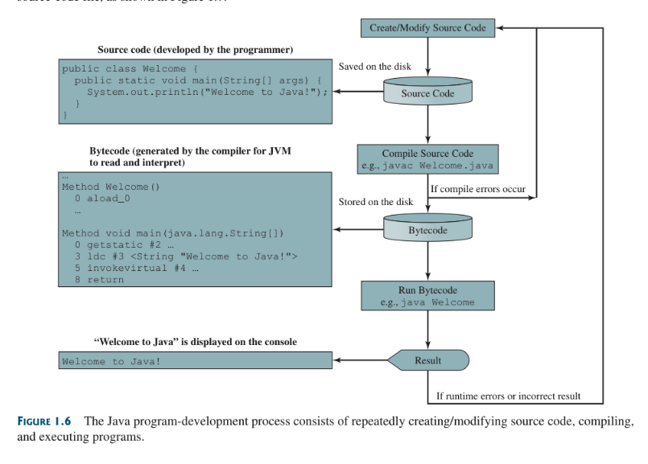
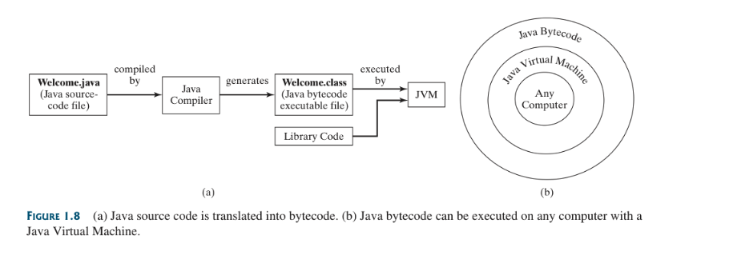

Creating, Compiling and Exectuing Java Programs
Table of Contents
1. Creating, Compiling and Exectuing Java Programs
1.1. File Creation
You save a Java program in a .java file and compile it into a .class file.
The .class file is executed by the Java Virtual Machine (JVM).
1.2. Compilation
A Java compiler translates a Java source file into a Java bytecode file.
The following command compiles Welcome.java:
javac Welcome.java
The compiler generates a bytecode file with a .class extension.
Thus, the preceding command generates a file named Welcome.class.
Java is a High-level Language, but Java bytecode is a low-level language.
The bytecode is similar to machine instructions but is architecture neutral (Runs in JVM).
Rather than a physical machine, the JVM is a program that interprets Java bytecode.
Java source code is compiled into Java bytecode, and Java bytecode is interpreted by the JVM.
Your Java code may use the code in the Java library.
The JVM executes your code along with the code in the library.
1.3. Execution
To execute a Java program is to run the program’s bytecode.
JVM translates the individual instructions in the bytecode into the target machine language code one at a time, rather than the whole program as a single unit.
Each step is executed immediately after it is translated.
The following command runs the bytecode for Listing 1.1:
java Welcome
1.3.1. Single File Execution
In JDK 11, you can use java ClassName.java to compile and run a single-file source code program.
This command combines compiling and running in one command.
A single-file source code program contains only one class in the file.
1.4. Assets

